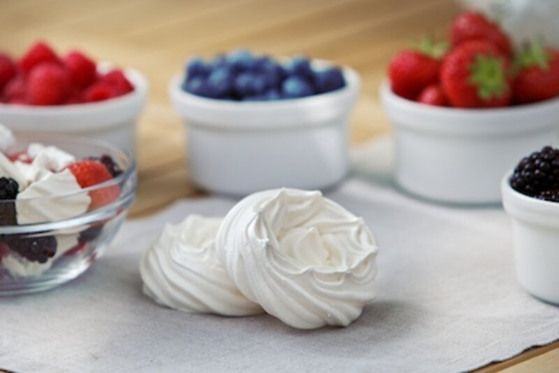

Desserts
Elegant and sweet, stiff peaks with chewy interior
Meringue, is a type of dessert made from whipped egg whites and sugar, and occasionally an acid such as citric acid. A binding agent such as corn starch may also be added. It is a.

Meringue, is a type of dessert made from whipped egg whites and sugar, and occasionally an acid such as citric acid. A binding agent such as corn starch may also be added. It is a traditional dessert mainly served together with whipped cream and fruits or in combination with baked products.
The key to the formation of a good meringue is the formation of stiff peaks and firm up through the heating process afterwards. Flavourings such as vanilla and lemon can be added to meringues to enhance taste.
Desserts
More in this area.
Aerated desserts
Aerated desserts or 'Mousses' are extremely popular in modern times. It is a.
02Cheesecake
Cheesecake is believed to have originated in ancient Greece, where records.
03Fruchtmousse
04Fruit mousse
A mousse is a prepared food that incorporates air bubbles to give it a light and.
05Jelly
06Set dessert
Ready-to-eat set desserts continue to grow both in terms of the volume and value.
Bring us the product.
Tell us what it has to do, how it is produced and where it currently fails. We will tell you what is possible.